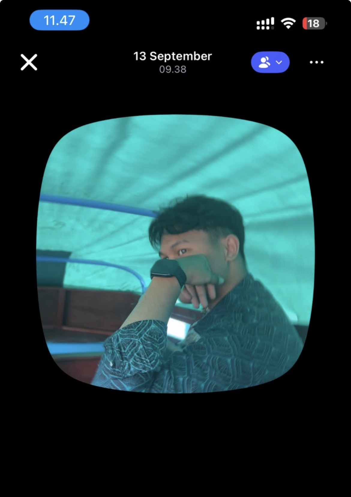

Nama "Kelompok Limkop" berasal dari kebiasaan kami bertiga yang sering berkumpul, duduk ngopi bersama, tertawa riang, serta menyelesaikan berbagai tugas bersama di warkop Lima Kopi (disingkat Limkop).
Di sanalah ide-ide kritis dan semangat kebersamaan kami terbangun, membentuk kami menjadi tim yang solid dengan prinsip dan pandangan yang teguh sebagai kelompok Oposisi.
"Menyuarakan apa yang perlu diuji. Mengusulkan apa yang menjadi solusi."